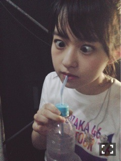

| 2016/08 20 Sat | えい。734回目 |
真夏の全国ツアー2016
昨日、福岡2日間の公演が終わり
地方公演を無事完走いたしました！
ありがとうございました。
2ndアルバムのジャケ写に掛けたり、
リアル乃木恋したり、
今までのツアーとは全く違うライブで
とても新鮮だったー*\(^o^)/*
青チームだったのですが、
隙間、魚たち、他の星から
という私的に好きなメドレーで
毎度楽しかった！
乃木恋は福岡初日に担当したよ〜
去年とは違う目線で
いろんなところを見ることができました。
いろんな意味ですごい気持ちが燃えました。
各地方ごとに完全燃焼させてきたよ！
汗も人一倍かいたよー
昨日スタッフさんと
散歩という名のウォーキングしてる途中、
休憩兼ねてしばらく橋の下眺めてたら
野生のエイを発見しました！
エイが泳いでたー*\(^o^)/*
良いことありそー*\(^o^)/*
乃木坂46公式LINEの方に送った動画。
『シークレットグラフィティー』
ひぐち君からのお願いを
今一度確認よろしく頼みます。
プラス、Aメロの
「ちまちま ひなちま フーフー！」
よろしく！！！！！
残すは神宮3日間です！
全曲披露！初披露たくさん！


神宮、ちゃんと水分とって
デビュー4周年記念と結成5周年記念、
みんなで盛大にお祝いしましょう∠( 'ω')／
今日は身体を休めます〜〜
まりか
コメント(520)
2016/08/20 14:12